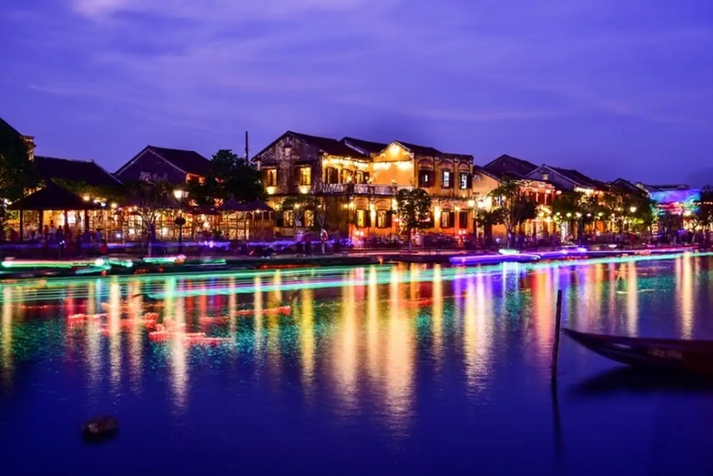

Giới thiệu chung
Quảng Nam là một tỉnh ven biển nằm ở cực bắc khu vực duyên hải Nam Trung Bộ, miền Trung của Việt Nam. Quảng Nam nằm trong vùng kinh tế trọng điểm miền Trung. Năm 1997, tỉnh được tái lập trên cơ sở tách tỉnh Quảng Nam – Đà Nẵng (hay còn được gọi là tỉnh Quảng Đà) thành 2 đơn vị hành chính là tỉnh Quảng Nam và thành phố Đà Nẵng. Hiện nay tỉnh có 2 thành phố là thành phố (tỉnh lỵ) Tam Kỳ và thành phố Hội An. Tỉnh Quảng Nam là nơi có nhiều di sản văn hóa thế giới nhất cả nước với hai di sản văn hóa thế giới được tổ chức UNESCO công nhận là phố cổ Hội An và thánh địa Mỹ Sơn. Ngoài ra, tỉnh Quảng Nam còn là một vùng đất địa linh nhân kiệt, nơi sản sinh ra nhiều người con ưu tú, tài ba và lỗi lạc cho đất nước. Đây cũng là tỉnh duy nhất của vùng duyên hải Nam Trung Bộ vừa giáp Biển Đông, vừa giáp biên giới với nước Cộng hòa Dân chủ Nhân dân Lào và có đường biên giới quốc tế.
Địa danh nổi bật
Quảng Nam là nơi giao thoa của các nền văn hóa như Việt, Hoa, Ấn Độ hay Chăm Pa. Mỗi địa điểm du lịch Quảng Nam đều mang theo những giá trị văn hóa vô cùng cao. Bạn sẽ được ghé thăm 2 di sản được công nhân là văn hóa thế giới: Phố cổ Hội An và Thánh Địa Mỹ Sơn. Không chỉ vậy, bạn còn được chiêm ngưỡng kiến trúc cổ tuyệt đẹp tại các tháp chàm hay Phật viện Đồng Dương. Mặt khác, bạn cũng sẽ được hòa mình vào khung cảnh thiên nhiên yên bình tại vịnh Dung Quất, Cù Lao Chàm, hồ Phú Ninh.
-
Phố cổ Hội An: Với diện tích khoảng 2 km2 nhưng phố cổ Hội An sở hữu lượt du khách ghé thăm cực lớn. Nơi đây thu hút bởi những ngôi nhà lợp ngói đá, những bức tường vàng mang lại vẻ đẹp yên bình. Đặc biệt, bạn có thể thoải mái thư giãn dạo bước với con đường nhỏ hẹp quanh sông Hoài.
Bạn sẽ được chiêm ngưỡng công trình Chùa Cầu với thiết kế mang đậm hơi hướng Nhật Bản. Nhà cổ Tấn Ký cũng là địa điểm tuyệt vời bạn nên ghé. Bởi nơi đây đã được tiếp đón các Nguyên thủ Quốc gia, các chính khách trong nước và ngoài nước. Hội An có rất nhiều địa điểm tuyệt vời chờ bạn khám phá.
-
Thánh địa Mỹ Sơn: Thánh địa Mỹ Sơn nằm trong một thung lũng có đường kính khoảng 2km. Nơi đây bao quanh là núi đồi, vô cùng ẩn mình. Địa điểm này từng là nơi tổ chức cúng tế của vương triều Champa. Đó cũng là lăng mộ của các vị vua Champa thời xưa. Bạn sẽ được khám phá rất nhiều di sản quý báu khi đến đây.
-
Cù Lao Chàm: Đây chính là địa điểm check-in tuyệt vời ở Quảng Nam mà rất nhiều du khách yêu mến. Nơi đây gồm 8 hòn đảo nhỏ, khí hậu vô cùng trong lành, mát mẻ. Bạn sẽ được thưởng thức yến sào siêu ngon ở đây.
Khi ghé thăm Cù Lao Chàm, bạn đừng bỏ quên trải nghiệm lặn ngắm san hô nhé. Bạn sẽ cực kỳ thích thú và ấn tượng với việc được hòa mình vào dòng nước xanh ngát xanh. Đặc biệt, bạn sẽ được nhìn ngắm những rặng san hô đầy màu sắc. Không chỉ có vậy, bạn cũng sẽ được chiêm ngưỡng những chú cá đây sắc màu như vẫn thường thấy trên ti vi.
-
Bãi biển Cửa Đại: Biển Cửa Đại được đánh giá là một trong 25 bãi biển đẹp nhất châu Á và là một trong những điểm du lịch hấp dẫn của khu vực miền Trung. Nơi đây nổi tiếng với vẻ đẹp hoang sơ, đường bờ cát trắng mịn mênh mông, những hàng dừa thẳng tắp nghiêng mình ra biển. Cùng với đó là làn nước biển trong xanh cùng gió biển đầy mát mẻ cho một trải nghiệm du lịch và nghỉ dưỡng đáng nhớ.
-
Đỉnh Quế: Với độ cao gần 1400km, Đỉnh Quế Tây Giang được coi là ngọn núi đẹp nhất của Trường Sơn hùng vĩ. Từ đây, bạn có thể nhìn ngắm toàn cảnh sắc thiên nhiên tươi đẹp. Bạn như được lạc vào trong chốn bồng lai tiên cảnh, yên bình và lãng mạn vô cùng.
Với độ cao gần 1400km, Đỉnh Quế Tây Giang được coi là ngọn núi đẹp nhất của Trường Sơn hùng vĩ. Từ đây, bạn có thể nhìn ngắm toàn cảnh sắc thiên nhiên tươi đẹp. Bạn như được lạc vào trong chốn bồng lai tiên cảnh, yên bình và lãng mạn vô cùng.
-
Làng Cổ Lộc Yên: Ngôi làng cổ với ngôi nhà lên đến hàng trăm năm tuổi khiến bạn có cảm giác quen thuộc khi đặt chân đến đây. Địa điểm du lịch Quảng Nam này sở hữu hơn mười ngôi nhà cổ trên 200 năm tuổi. Ngôi nhà được làm bằng gỗ mít, có hai gian, đúng theo kiến trúc thời xưa.


Văn hóa và lễ hội
Quảng Nam, nơi hội tụ văn hóa độc đáo, là điểm đến của những lễ hội tuyệt vời. Khám phá những sự kiện này để hiểu rõ hơn về đời sống và văn hóa độc đáo của người dân, trải nghiệm du lịch Quảng Nam một cách trọn vẹn và ý nghĩa.
-
Lễ hội làng gốm Thanh Hà: Làng gốm Thanh Hà, nơi truyền thống làm gốm đã tồn tại hàng thế kỷ, nổi tiếng với sản phẩm chất lượng. Lễ hội làng gốm Thanh Hà được tổ chức mỗi năm để tôn vinh nghề làm gốm, gửi lời cầu nguyện cho một năm mới bình an và thịnh vượng.
Sau lễ diễu hành nghệ thuật từ miếu Nam Diêu đến đình Thanh Chiếm, nghi thức dâng lễ Tổ khởi động cho phần hội chính sôi động. Ngày lễ tại Quảng Nam tràn ngập với các hoạt động văn nghệ, từ biểu diễn hát bội đến hát bài chòi truyền thống. Ngoài ra, ngày lễ còn diễn ra nhiều trò chơi dân gian sôi nổi như cõng nàng về dinh, chuốt gốm, nấu cơm bằng niêu đất, đập nồi, đánh trống khi bịt mắt, đua thuyền.
-
Lễ rước cô Bà chợ Được: Theo truyền thống, cách đây hàng trăm năm, xã Bình Triều có bà nữ anh kiệt Nguyễn Thị Của, người nổi tiếng chữa bệnh và giúp đỡ bà con. Lễ hội rước cô Bà chợ Được được tổ chức để tưởng nhớ và tri ân bà, là sự kiện quan trọng của cộng đồng.
Trong ngày lễ hội tại Quảng Nam, hương thơm của chức nghi và niềm tin sẽ đồng hành cùng những hoạt động văn nghệ và giải trí. Điểm đặc biệt là lễ rước cộ Bà, xuất phát từ lăng thờ và đi vòng quanh chợ để dân chúng tham gia chiêm bái. Suốt cả ngày, từ buổi sáng đến hết hội, có nhiều sự kiện đặc sắc như hội hoa đăng, múa lân, hát dân ca, bóng đá và đua ghe.

-
Lễ giỗ tổ làng nghề Mộc Kim Bồng: Theo truyền thống, ông Tổ nghề mộc Kim Bồng, từ Thanh Hóa, đã lập làng mộc Kim Bồng tại đây. Để tưởng nhớ và cầu an cho năm mới, cộng đồng tổ chức lễ giỗ tổ làng Mộc Kim Bồng vào đầu Xuân mỗi năm.
Lễ thường kéo dài 2 tiếng, bắt đầu từ 8 giờ sáng với 2 nghi thức: cúng Âm Linh trước sân và lễ chính trong nhà thờ. Phần lễ chính do những nghệ nhân lớn tuổi của làng tiến hành sau khi đã rửa sạch chân tay (Quán Tẩy).
Ẩm thực Quảng Nam
Ẩm thực Quảng Nam mang đậm dấu ấn dân dã và phong phú, với nhiều món ăn đặc sản nổi tiếng như mì Quảng, cơm gà Tam Kỳ...
-
Mỳ Quảng: Đến Quảng Nam, bạn sẽ không khó để bắt gặp một quán mì Quảng ở mọi ngóc ngách. Mì Quảng ở đây cũng phổ biến như phở ở Hà Nội vậy. Ngoài nguyên liệu chính là bánh tráng thái mỏng thành sợi và nước dùng, món đặc sản Quảng Nam còn ăn kèm gà, cá lóc, lươn, bò, tôm, ếch… Bánh tráng nướng, đậu phộng và các loại rau thơm làm tăng hương vị món ăn, kích thích vị giác người thưởng thức.

-
Cao lầu: “Đến Quảng Nam, ngồi lầu cao ăn cao lầu” là câu nói cửa miệng được du khách truyền tai nhau. Cao lầu có nhiều nét giống mì Quảng nhưng cách chế biến kỳ công hơn. Ở món cao lầu, sợi mì được chiên giòn, nước lèo thay bằng nước xíu. Cao lầu thường chỉ ăn kèm với miếng cao lầu và da heo chiên giòn, rau cải xanh, rau đắng và đậu phộng.
Trong ngày lễ hội tại Quảng Nam, hương thơm của chức nghi và niềm tin sẽ đồng hành cùng những hoạt động văn nghệ và giải trí. Điểm đặc biệt là lễ rước cộ Bà, xuất phát từ lăng thờ và đi vòng quanh chợ để dân chúng tham gia chiêm bái. Suốt cả ngày, từ buổi sáng đến hết hội, có nhiều sự kiện đặc sắc như hội hoa đăng, múa lân, hát dân ca, bóng đá và đua ghe.
-
Bánh canh Hội An: Sợi bánh canh làm từ gạo dẻo, khi trần trong nước sôi không hề bị nát. Tùy bí quyết gia truyền của từng quán, bánh canh được chế biến cùng các nguyên liệu khác như: giò, cá lóc, tôm, chả, cua…Khi thưởng thức, bạn sẽ cảm nhận được độ dẻo dai của sợi bánh hòa quyện trong vị đậm đà của nước dùng, ăn một lại muốn ăn hai.
-
Bánh mì Hội An: Bánh mì ở Hội An nhỏ sinh, dẹt và nhọn 2 đầu. Có rất nhiều loại nhân khác nhau để thực khách lựa chọn tùy sở thích. Nhân bánh luôn đầy đặn, căng phồng nhìn thật đã mắt. Đến Quảng Nam, bạn có thể thưởng thức đặc sản này ở những quán nổi tiếng lâu năm như: Madam Khanh; bánh mì Phượng, bánh mì Bích, bánh mì Minh Thu…
Con người và đời sống
Người Quảng Nam có tố chất thông minh, sáng tạo, cứng cỏi và có truyền thống đấu tranh kiên cường, bất khuất.
"Đất Quảng Nam chưa mưa đà thấm
Rượu Hồng Đào chua nhấm đã say"
Sức sống, sức sáng tạo của người dân nơi đây luôn gắn liền với sự “nhạy cảm với cái mới, khao khát cái mới như đất hạn khát mưa, háo hức hút ngay từ giọt nước đầu tiên. Thậm chí khi chưa thật sự có giọt nước nào, chưa thật sự mưa đã náo nức hóng về mưa, cảm nhận ra nó rất sớm, chờ đón nó nồng nhiệt"
Một số hình ảnh về con người Quảng Nam